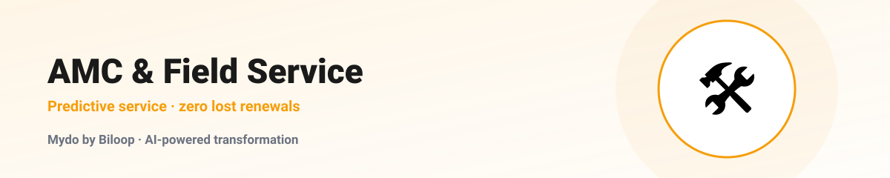
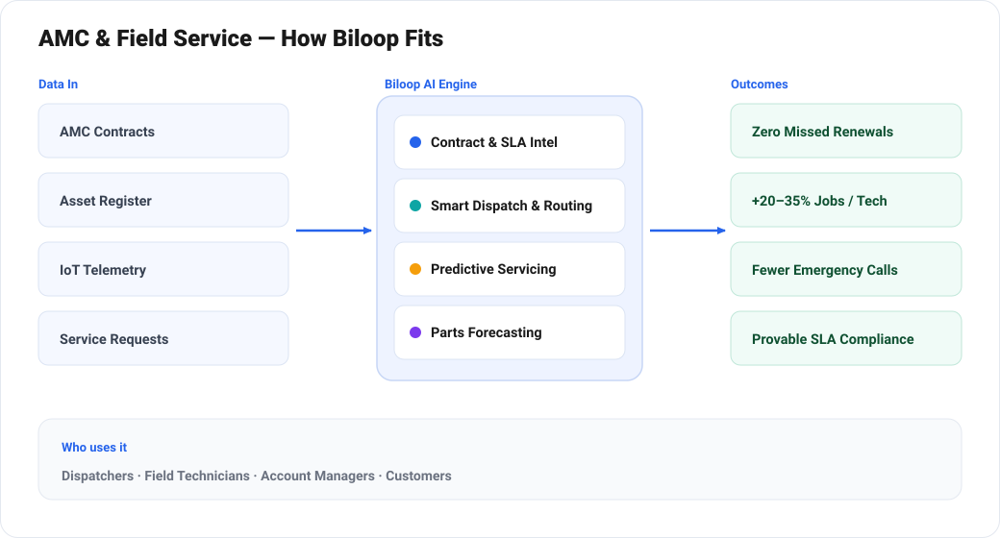

From Break-Fix to Predictive: How AI Transforms AMC & Field Service
AMCField ServiceSLA & ContractsThe Annual Maintenance Contract business is deceptively hard. You're selling a promise — that equipment will keep running, and that when it doesn't, someone competent will arrive within a defined window. Profit lives in the gap between the fixed fee you charge and the variable cost of honouring that promise across hundreds of contracts, thousands of assets, and a fleet of technicians scattered across a city.
Get scheduling, parts and renewals right and AMC is a beautiful recurring-revenue machine. Get them wrong and you bleed money on overtime, emergency call-outs, SLA penalties and silent contract churn. Mydo by Biloop is built to keep that machine profitable.
Where AMC margin disappears
1. Renewals that quietly lapse
Every expired contract that isn't renewed is recurring revenue gone — and the most expensive customer to win back is the one you already lost. Manual renewal tracking on a spreadsheet means deadlines slip.
2. Reactive, inefficient scheduling
Dispatching the nearest qualified technician with the right parts is a hard optimisation problem. Done by phone and whiteboard, it produces long drive times, missed SLAs and idle capacity.
3. No visibility into asset health
Without service history per asset, every visit starts from zero. There's no way to predict failures or to prove the value you deliver to the customer.
4. SLA penalties and disputes
If you can't show response and resolution times against the contract, you lose penalty disputes and renewal negotiations.
How Mydo transforms AMC operations

Contract and SLA intelligence
Mydo reads each AMC contract and extracts the terms that matter — covered assets, response and resolution SLAs, included visits, exclusions, pricing and renewal dates — into a structured record. Every job is then measured against the right SLA automatically, and renewals are surfaced months ahead with the data needed to make the case for an uplift.
Smart, SLA-aware scheduling and dispatch
Mydo assigns jobs by skill, location, parts availability and SLA urgency — minimising drive time while protecting your response commitments. Technicians get an optimised route and full job context on their phone; dispatchers see the whole fleet on one board.
Preventive and predictive maintenance
Mydo auto-schedules the preventive visits each contract includes, so nothing is forgotten. Where assets emit telemetry, it watches for the early signatures of failure and recommends a visit before the breakdown — converting expensive emergency call-outs into planned, low-cost service.
Complete asset and service history
Every asset carries its full record — installs, visits, parts replaced, faults. Technicians arrive informed, recurring faults become visible, and you can show the customer exactly what their contract has delivered.
Spare-parts and inventory intelligence
Mydo forecasts parts demand from the installed base and service patterns, so vans and stores carry the right parts — cutting both stockouts (which cause repeat visits) and dead inventory.
Customer self-service and transparency
Customers log requests, track technician arrival, and see service history through a simple portal — reducing inbound calls and building the trust that drives renewals.
Before and after
| Area | Before Mydo | With Mydo |
|---|---|---|
| Renewals | Manual, often missed | Tracked & auto-drafted |
| Scheduling | Phone & whiteboard | SLA- & route-optimised |
| Maintenance | Break-fix | Preventive & predictive |
| Asset history | Scattered or absent | Complete per-asset record |
| SLA proof | Disputed | Measured & reportable |
For any AMC provider
Whether you maintain HVAC, elevators, medical equipment, IT hardware, gensets or facilities, the economics are the same — and so is the Mydo advantage. It integrates with your existing CRM and accounting, and rolls out one service line at a time.